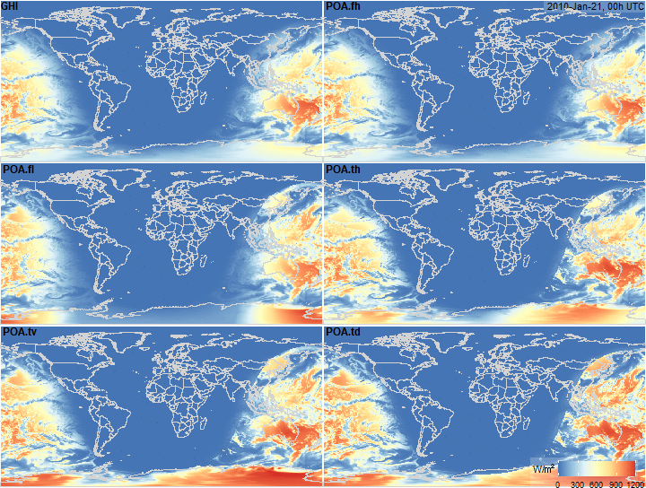

Plane of Array (POA) irradiance model
All steps at once
# Example dataset
merra <- merra2_sample(c(3, 6, 12), add.coord = T)
merra
x <- fPOA(merra)Figure code
fig.POA <- function(x, name,
legend.position = NULL,
timestamp.position = NULL, ...) {
plot_merra(x, name = name, limits = c(0, 1200),
# legend.position = c(0.88, 0.05),
legend.position = legend.position,
legend.name = ("W/\u33A1"),
timestamp.position = timestamp.position,
expand.x = c(0.002, 0.005), expand.y = c(0.002, 0.005)
)
}
fig.POA(x, "SWGDN")
fig.poa.grid <- function(x,
legend.position = c(0.81, 0.08),
timestamp.position = c(125, 85),
...) {
plot_grid(fig.POA(x, "SWGDN", ...),
fig.POA(x, "POA.fh", timestamp.position = timestamp.position, ...),
fig.POA(x, "POA.fl", ...),
fig.POA(x, "POA.th", ...),
fig.POA(x, "POA.tv", ...),
fig.POA(x, "POA.td", legend.position = legend.position, ...),
# fig.dPS(x),
labels = c("GHI", "POA.fh", "POA.fl", "POA.th", "POA.tv", "POA.td"),
ncol = 2, nrow = 3, hjust = -0.1, vjust = 1.1, label_size = 12,
label_colour = "black")
}
fig.poa.grid(x)
# ii <- lubridate::hour(x$UTC) <= 2; summary(ii)
gif_merra(x, FUN = "fig.poa.grid", dirname = "images", fps = 10,
gif.width = 1.25 * 576,
gif.height = 1.25 * 360 * 1.21,
filename.prefix = "POA_map_")

Plane of Array (POA) Irradiance estimates for alternative tracking systems
Step-by-step
Solar postion
# x <- fPOA(merra, keep.all = T)
x <- solar_position(merra, keep.all = T)
x$na <- 1L; x$na[!x$beam] <- NA # drop nights
summary(x$beam)
plot_merra(x, "beam", limits = c(0, 1), palette = "YlGnBu",
legend.name = "")
summary(x$declination)
fig.declination <- function(x, limits = c(-.5, .5),
legend.name = "angle\u00b0",
...) {
plot_merra(x, "declination", limits = limits,
# palette = "YlGnBu",
legend.name = legend.name, ...)
}
fig.declination(x)
summary(x$eq_time)
fig.eq_time <- function(x, limits = c(-15, 15), ...) {
plot_merra(x, "eq_time", limits = limits, palette = "PRGn",
legend.name = "Munutes", direction = -1, ...)
}
fig.eq_time(x)
summary(x$solar_time)
fig.solar_time <- function(x, limits = c(-12, 36),
palette = "Dark2", legend.name = "Hours",
...) {
plot_merra(x, "solar_time", limits = limits,
palette = palette, legend.name = legend.name, ...)
}
fig.solar_time(x)
summary(x$hour_angle)
summary(rad2deg(x$hour_angle))
fig.hour_angle <- function(x, limits = c(-360, 360), scale = 180/pi,
palette = "Set1", legend.name = "angle\u00b0",
direction = 1, ...) {
plot_merra(x, "hour_angle", limits = limits, scale = scale,
palette = palette, legend.name = legend.name, direction = direction, ...)
}
fig.hour_angle(x)
summary(x$zenith)
fig.zenith <- function(x, ...) {
plot_merra(x, "zenith", limits = c(0, 90),
direction = 1,
scale = x$na,
palette = "Spectral",
legend.name = "angle\u00b0", ...)
}
fig.zenith(x)
summary(x$azimuth)
fig.azimuth <- function(x, ...) {
plot_merra(x, "azimuth", limits = c(0, 360),
legend.name = "angle\u00b0",
palette = "Set1",
# palette = "Blues",
scale = x$na, direction = -1, ...)
}
fig.azimuth(x)
fig.solar_postion <- function(x,
legend.position = c(0.81, 0.08),
timestamp.position = c(125, 85),
...) {
plot_grid(fig.declination(x, timestamp.position = NULL,
legend.position = legend.position, ...),
fig.eq_time(x, timestamp.position = timestamp.position,
legend.position = legend.position, ...),
fig.solar_time(x, timestamp.position = NULL,
legend.position = legend.position, ...),
fig.hour_angle(x, timestamp.position = NULL,
legend.position = legend.position, ...),
fig.zenith(x, timestamp.position = NULL,
legend.position = legend.position, ...),
fig.azimuth(x, legend.position = legend.position,
timestamp.position = NULL, ...),
# fig.dPS(x),
labels = c("declination", "eq_time", "solar_time",
"hour_angle", "zenith", "azimuth"),
ncol = 2, nrow = 3, hjust = -0.1, vjust = 1.1, label_size = 12,
label_colour = "black")
}
fig.solar_postion(x)
# ii <- lubridate::hour(x$UTC) <= 2; summary(ii)
gif_merra(x, FUN = "fig.solar_postion", dirname = "images", fps = 5,
gif.width = 1.25 * 576,
gif.height = 1.25 * 360 * 1.21,
filename.prefix = "fig.solar_postion_")
# ggplot(data = world) +
# geom_sf(color = alpha("grey75", 1), fill = NA)
# scale_x_continuous(expand = c(0,0)) +
# scale_y_continuous(expand = c(0,0))
# ggplot(world_map, aes(x = long, y = lat, group = group)) +
# geom_polygon(fill = NA, colour = "grey75")
# world_map <- map_data("world")
# world_sf <- rnaturalearth::ne_countries(scale = "medium", returnclass = "sf")
# world_sp <- rnaturalearth::ne_countries(scale = "medium", returnclass = "sp")
# world_df <- fortify(world_sp)
# b + geom_sf(data = world_sf, color = "lightgrey",
# fill = NA, inherit.aes = F, size = .05) +
# coord_sf(xlim = c(-180, 180), ylim = c(-90, 90))
# b + geom_polygon(data = world_df, aes(x = long, y = lat, group = group),
# fill = NA, colour = "lightgrey", inherit.aes = F)
Solar position variables
Global Horizontal Irradiance decomposition
x <- solar_irradiance(x, keep.all = T)
summary(x$ext_irrad)
fig.ext_irrad <- function(x, ...) {
plot_merra(x, "ext_irrad", limits = c(1300, 1450), direction = 1,
palette = "Oranges", legend.name = "W/\u33A1", ...)
}
fig.ext_irrad(x)
summary(x$clearness_index)
fig.clearness_index <- function(x, ...) {
plot_merra(x, "clearness_index", limits = c(0, 1), direction = -1, palette = "Blues")
}
fig.clearness_index(x)
summary(x$diffuse_fraction)
fig.diffuse_fraction <- function(x) {
plot_merra(x, "diffuse_fraction", limits = c(0, 1), palette = "Blues", direction = 1)
}
fig.diffuse_fraction(x)
summary(x$DNI)
# merra[x$DNI > x$ext_irrad,]
# x[x$DNI > x$ext_irrad,]
# solar_irradiance(x[x$DNI > x$ext_irrad,])
fig.DNI <- function(x) {
plot_merra(x, "DNI", limits = c(0, 1500))
}
fig.DNI(x)
summary(x$DHI)
plot_merra(x, "DHI", limits = c(0, 1500))PV-array position
x <- pv_array_position(x, array.type = "all")
x
summary(x$array.tilt.fh)
plot_merra(x, "array.tilt.fh", limits = c(0, 90), direction = -1,
scale = x$na)
summary(x$array.azimuth.fh)
plot_merra(x, "array.azimuth.fh", limits = c(0, 360), direction = -1,
palette = "Spectral",
scale = x$na)
summary(x$array.tilt.fl)
plot_merra(x, "array.tilt.fl", limits = c(0, 90), direction = -1)
summary(x$array.azimuth.fl)
plot_merra(x, "array.azimuth.fl", limits = c(0, 360), direction = -1,
# palette = "Spectral",
palette = "Set1",
)
summary(x$array.tilt.th)
plot_merra(x, "array.tilt.th", limits = c(0, 90), direction = -1,
scale = x$na)
summary(x$array.azimuth.th)
plot_merra(x, "array.azimuth.th", limits = c(0, 360), direction = -1,
# palette = "Spectral",
palette = "Set1"
)
summary(x$array.tilt.tv)
plot_merra(x, "array.tilt.tv", limits = c(0, 90), direction = -1)
summary(x$array.azimuth.tv)
plot_merra(x, "array.azimuth.tv", limits = c(0, 360), direction = -1,
# palette = "Spectral",
palette = "Set1",
scale = x$na)
gif_merra(x, FUN = "plot_merra", dirname = "images", fps = 10,
gif.width = 576,
gif.height = 360 * 1.21,
filename.prefix = "array.azimuth.tv_", name = "array.azimuth.tv",
limits = c(0, 360), direction = -1, palette = "Set1",
# scale = x$na
)
summary(x$array.tilt.td)
plot_merra(x, "array.tilt.td", limits = c(0, 90), direction = -1,
scale = x$na)
summary(x$array.azimuth.td)
plot_merra(x, "array.azimuth.td", limits = c(0, 360), direction = -1,
# palette = "Spectral",
palette = "Set1",
scale = x$na)Angle of Incidence (AOI)
x <- angle_of_incidence(x, array.type = "all")
summary(x$AOI.fh)
summary(rad2deg(x$AOI.fh))
plot_merra(x, "AOI.fh", limits = c(0, 90), direction = 1,
palette = "Blues",
scale = 180/pi)
summary(rad2deg(x$AOI.fl))
plot_merra(x, "AOI.fl", limits = c(0, 90), direction = 1,
palette = "Blues",
scale = 180/pi)
summary(rad2deg(x$AOI.th))
plot_merra(x, "AOI.th", limits = c(0, 90), direction = 1,
palette = "Blues",
scale = 180/pi)
summary(rad2deg(x$AOI.tv))
plot_merra(x, "AOI.tv", limits = c(0, 90), direction = 1,
palette = "Blues", #na.value = "#040434",
scale = 180/pi)
summary(rad2deg(x$AOI.td))
plot_merra(x, "AOI.td", limits = c(0, 90), direction = 1,
palette = "Blues",
scale = 180/pi)Plane of Array (POA) irradiance
x <- poa_irradiance(x, array.type = "all", keep.all = T)
summary(x$POA.td)
# summary(rad2deg(x$POAb.td))
plot_merra(x, "POA.td", limits = c(0, 1200), direction = -1,
# palette = "Blues",
# na.value = "#000336",
# na.value = "#000F4D",
# na.value = "#002366",
# na.value = "#040434",
# na.value = "#070B34",
scale = x$na)
# save(x, )